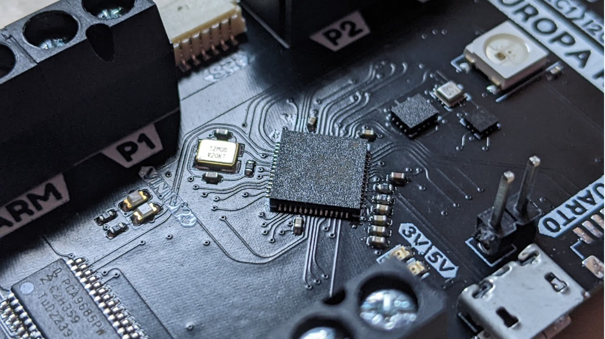
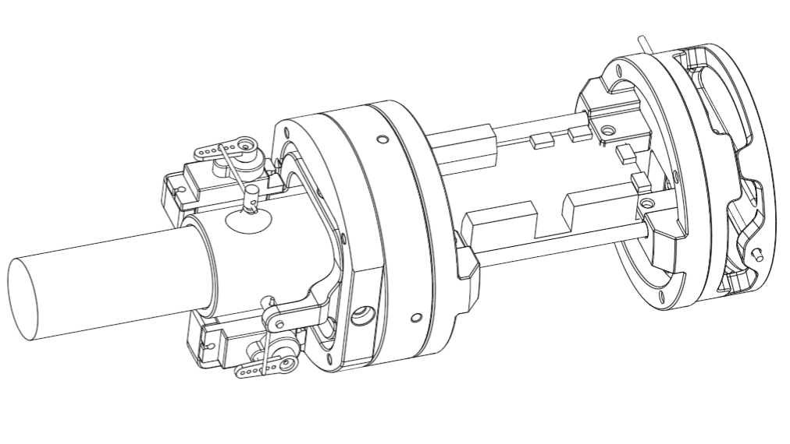
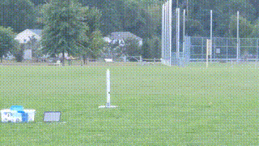
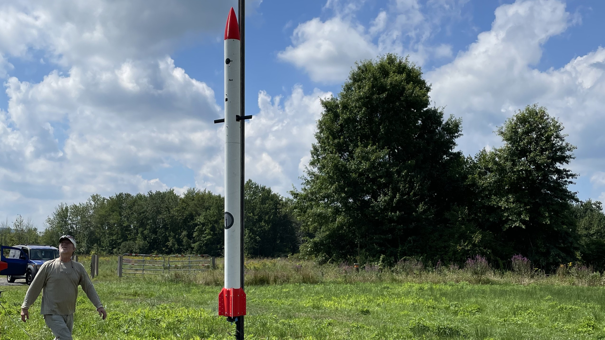
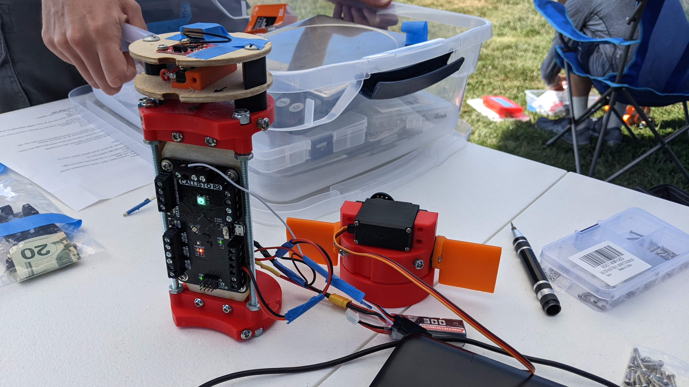
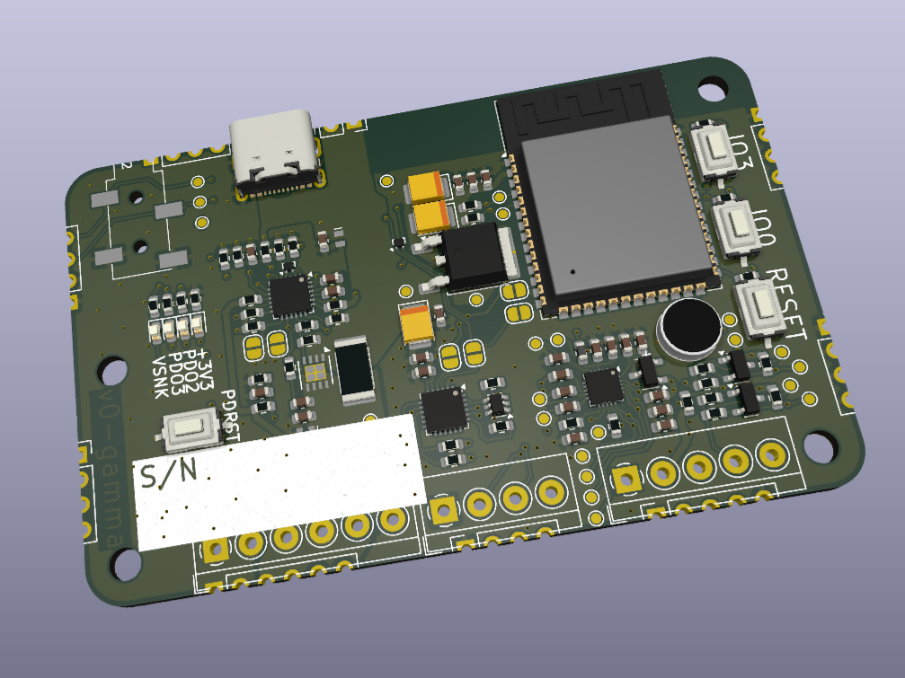
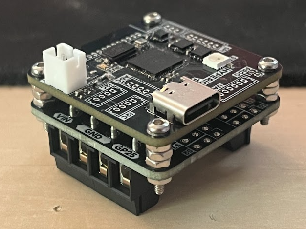
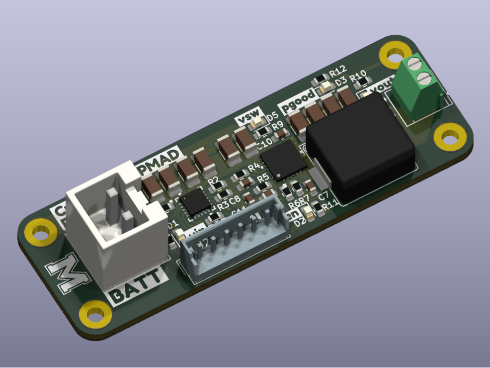

Projects
Since December 2020 I have designed and built multiple thrust vector control (TVC) systems for model rockets. They estimate position, velocity, and attitude using fused GPS, gyroscope, accelerometer, and magnetometer data via orientation and Kalman filters to reduce bias and noise. A custom TVC mount with full‑state feedback plus in‑flight misalignment compensation stabilizes the vehicle.



I built iterative rocket simulators evolving from 2-axis to full 6DOF models including aerodynamics, deployable fins, and drag brakes. Accuracy enabled algorithm development for new control strategies. Created a landing burn guidance algorithm (G‑FIELD: Guidance for Fixed Impulse Efficient Landing Diverts) now being implemented on hardware.
In 2022 I helped design Local Rocket 1 (H/I impulse, ~1000 ft). I handled avionics: navigation, deployment, and control support. Built the Callisto flight computer plus a custom RTOS. An asynchronous Kalman filter provided robust velocity estimates even with GPS dropout while canards actively damped roll.



I have produced six flight computer PCB iterations progressing to fully custom SMT designs. Additional boards include a UMASS Rocket Team flight computer and power management / distribution systems for CubeSat projects.


